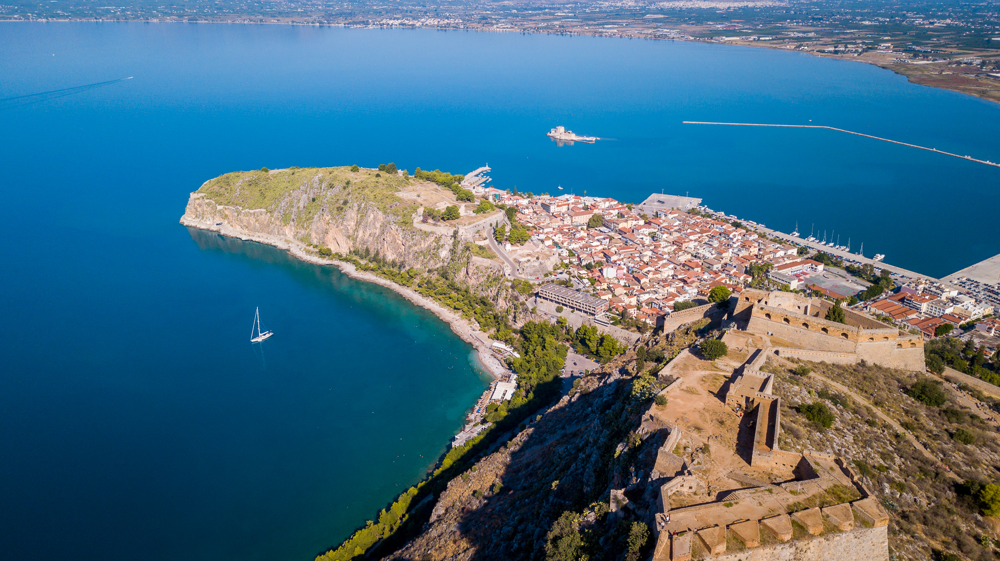
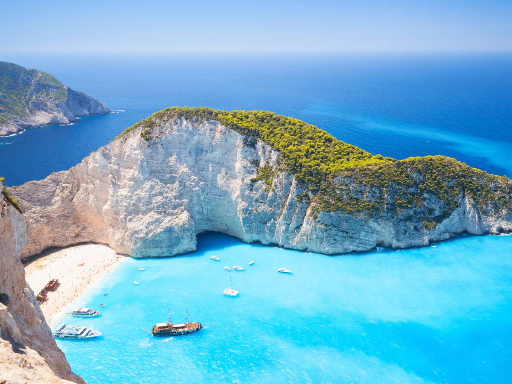

La Grèce est n'est pas qu'un conservatoire de ruine antique,
si belles soient-elles, ne se limite pas à son lointain passé prestigieux.
Elle a beaucoup à proposer à qui sait sortir des sentiers battus.
Autrement dit, il serait dommage de se limiter à un circuit un peu plus classique,
Au cours des quelques semaines que j'ai passé là-bas,
j'ai expérimeté une ville dynamique, je
vous en donne mes coups de cœur.
Suite à mon séjour en Grèce . Et je suis
tombé sous le charme de ce pays et de la façon de vivre et de ses habitants.
Un pays surnommé "le berceau de la civilisation occidentale". Venons-en au centre du sujet : Que visiter en Grèce ? Je vais
vous présenter une liste non exhaustive de ce qu’il faudrait voir lors de
votre voyage dans les villes grecques qui reçoit de plus en plus de visiteurs par an.
Découvrez les lieux mytiques,
les plats typiques de Grèce pour vous satisfaire tout au
long de l'année.

Grèce

Les lieux à ne pas manquer ↬
Athènes, Le Péloponnèse, Mycènes, Epidaure, Mystra, Thessalonique, Les gorges de Vikos, Les Cyclades, pour finir Les plages de Grèce...
Athènes
Athènes, Ville millénaire, l’une des plus anciennes au monde, Athènes se révèle surprenante. Avec ces
monuments antiques, au milieu de la ville moderne, elle comblera autant les amateurs d’histoire et de mythologie
que les gens préférant une atmosphère urbaine et moderne.
Si vous visitez la Grèce ou même les îles Grecques, il y a de fortes chances que vous atterrissiez ou repartiez d’Athènes.
Profitez-en pour y passer 2 jours , c’est une ville incontournable d’un séjour en Grèce.
Les lieux d’intérêts à visiter à Athènes:
L’Acropole: site antique majeur et emblématique, c’est le plus visité de la ville. Vous pourrez notamment y admirer le Parthénon,
le plus grand temple dorique de Grèce, bâti en hommage à Athéna Parthénos, une déesse représentant la puissance de la ville.
Le musée de l’Acropole, à faire absolument pour comprendre l’histoire de l’Acropole et admirer tous ses trésors.
L’Agora Antique: centre politique, social et administratif de l’Athènes antique.
Le musée national archéologique et sa collection d’antiquités grecques allant du néolithique à la période classique
Le stade des PanathénéesLe stade des Panathénées construit au IV ème siècle et restauré en 1895 afin d’accueillir les premiers Jeux Olympiques
Le jardin national,Le jardin national, poumon vert de la capitale. Idéal pour profiter d’un peu d’ombre.
La place SyntagmaLa place Syntagma où se trouve le Parlement et où vous pourrez assister toutes les heures à la relève de la garde
Le quartier de MonastirakiLe quartier de Monastiraki, célèbre pour son marché aux puces du dimanche et ses nombreux magasins de souvenirs
La colline de LycabetteLa colline de Lycabette. Le sommet, accessible à pied ou en funiculaire, vous garantie une vue imprenable sur l’Acropole et tout Athènes
La rue Ermou, pour les amateurs de shopping.
Le Péloponnèse
Le Péloponnèse regorge de sites historiques et de vestiges à visiter,
issus des nombreuses civilisations qui s’y sont succédées au fil des siècles.
Les lieux à ne pas manquer dans le Péloponnèse:
Le canal de Corinthe:creusé artificiellement dans la roche, ce canal, long de 6 km, relie la mer Ionienne à la mer Egée et permet aux bateaux d’éviter un détour de 400 km.
Il sépare le Péloponnèse de la Grèce Continentale. A voir pour la photo souvenir.
La route des vins de Némée:au Sud de Corinthe, la région produit des vins rouges, réputés parmi les meilleurs de Grèce.
Nauplie:jolie ville en bord de mer surmontée de 3 forteresses. Je vous conseille la visite de la forteresse de Palamède, située sur une colline surplombant la ville.
Le site est vraiment grand et bien aménagé. Il offre de nombreux points de vue sur la mer et Nauplie. Ça a été une très bonne surprise lors de mon itinéraire en Grèce.
Les gorges de Vouraikos:le meilleur moyen de les découvrir et le plus spectaculaire est d’emprunter le train à crémaillère qui fait le trajet tous les jours entre Diakofto et Kalavryta.
La région du Magne:encore épargnée par le tourisme de masse, elle est plus rurale et assez sauvage. Parcourir ses routes en voiture vous permettra de profiter de splendides points de vues.
L’île d’Elafonissos: tout au Sud du Péloponnèse, vous y trouverez l’une des plus belles plages de Grèce: la plage de Simos.
Mycènes

Classée au patrimoine mondiale de l’UNESCO, Mycènes est l’un des plus anciens sites de Grèce. Édifiée sur une
colline, la cité antique est surtout connue pour avoir abrité en ses murs, le légendaire Agamemnon. Érigé en héros
suite à sa victoire lors de la guerre de Troie, Agamemnon était considéré comme l’un des rois les plus puissants de Grèce.
Sur le site, vous pourrez notamment découvrir le mur d’enceinte, le palais royal et les cercles des tombes où ont été trouvés de nombreux objets en or et du mobilier funéraire.
Vous pouvez aussi faire un tour par le musée archéologique de Mycènes pour en apprendre plus sur la civilisation mycénienne et cette époque qui a marqué l’histoire de la Grèce.
Epidaure

Deuxième site archéologique majeur du Péloponnèse et de la région de l’Argolide avec Mycènes, il est lui aussi classé au patrimoine mondial de l’UNESCO.
Le lieu est surtout réputé pour son théâtre antique construit au IV ème siècle avant JC. Incroyablement bien conservé, le théâtre d’Epidaure pouvait accueillir jusqu’à 14 000 personnes.
Possédant une très bonne acoustique, il est encore utilisé de nos jours pour des représentations théâtrales de pièces antiques lors du Festival d’Epidaure (en juillet-août).
L’ensemble du sanctuaire comprend également un temple dédié à Asclepios ( dieu de la médecine), la tholos (un bâtiment circulaire), le stade et
un petit musée archéologique où sont exposées quelques statues découvertes sur le site et dans les environs.
Mystra

Le site, l’un des plus beaux du Péloponnèse, se situe à une dizaine de kilomètres de Sparte, sur les pentes du massif du Taygète.
Classée au patrimoine mondial de l’UNESCO, Mystra fut l’une des capitales de l’Empire Byzantin et un haut lieu culturel. Pas épargnée par le temps et les drames, la cité fut longtemps laissée à l’état de ruines.
Aujourd’hui, après d’importants travaux de restauration (encore en cours), l’ensemble vaut vraiment une visite.
Vous pourrez notamment admirer la forteresse et le Kastro ainsi que de nombreuses églises et monastères dans un très bel environnement.
Thessalonique

Du fait de sa position, au Nord de la Grèce, Thessalonique est moins touristique que certains autres endroits mais c’est tout de même la 2 ème plus grande ville du pays.
Quoi faire et voir à Thessalonique, en Grèce:
La Tour Blanche: ancienne prison et lieu de torture, c’est le monument emblématique de la ville.
Le front de mer où se trouve de nombreux bars et restaurants.
Le marché Modiano pour faire le plein de produits locaux.
La rotonde et l’arc de Galère, 2 monuments romains.
Le musée archéologique et sa collection de vestiges mis à jour en Macédoine grecque ( à ne pas confondre avec la République de Macédoine).
Aller voir les nombreuses églises: Agios Pavlos, Agios Dimitrios, Agia Sofia, Agios Nikolaos Orfanos, Ossios David.
La citadelle et les remparts de la ville haute, lieu prisé au coucher du soleil.
La Via Egnatia pour faire du shopping
Visiter un porte hélicoptère et/ou un sous marin de la marine Grecque, si vous avez la chance qu’ils soient à quai lors de votre séjour.
Les Cyclades

Santorin est bien sur la plus connue, c’est vraiment l’île de rêve des Cyclades par excellence.
Tout le monde a déjà vu cette photo de l’église au dôme bleu et aux murs immaculés dominant la mer.
Mais savez-vous qu’il y en fait 24 îles habitées dans l’archipel des Cyclades ? De quoi en prendre plein les yeux !
Petit tour d’horizon des îles des Cyclades:
Santorin:l’île romantique où des milliers de personnes viennent admirer le superbe coucher de soleil tous les jours.
Mykonospour faire la fête toutes les nuits au son des meilleurs Dj du monde.
Amorgos où s’est tourné le film « Le grand bleu » avec Jean Reno, super destination pour la randonnée!
Naxos,la plus grande île des Cyclades, qui possède plusieurs jolies plages.
Paros où vous pourrez visiter de charmants villages et profiter de belles plages.
Andros et ses nombreux chemins de randonnée pour sillonner l’île.
Délos et ses sites antiques.
Tinos et ses villages perdus dans la montagne.
Les gorges de Vikos

Les gorges de Vikos font partie des lieux d’intérêts à voir en Grèce. Si vous aimez la randonnée, c’est une super destination.
Elles se trouvent dans la région des Zagoria, au Nord Ouest de la Grèce, à environ 2h30 de route des Météores.
Avec près de 900 mètres de profondeur et 12 km de long, les Gorges sont parmi les plus profondes du monde. De part leur étroitesse elles sont vraiment très impressionnantes.
Plusieurs sentiers de randonnées et itinéraires sont possibles pour aller les admirer et s’y balader. Dans tout les cas, soyez bien équipés: chaussures de randonnée,
bouteilles d’eau, crème solaire et chapeau sont de rigueur! Je vous recommande aussi de signaler à l’avance à votre hôtel votre parcours en cas de problème.
La randonnée la « plus classique », environ 12 km, part du village de Monodendri et rejoint celui de Vikos.
Mais vous avez aussi la possibilité d’en faire de moins longues et même d’emprunter votre voiture pour vous rapprocher de certains points de vue. Celui d’Oxia par exemple, vaut le coup d’oeil !
Les plages de Grèce
Où partir en Grèce pour profiter de belles plages ?
Ce qui est bien c’est que peu importe où vous allez en Grèce, il y a de fortes chances que vous puissiez profiter des plages. Bon, à part en plein centre du pays ou vers les Météores, je vous l’accorde.
Après se pose la question des « belles plages ». Tout dépend de ce que vous aimez: de grandes plages de sable fin,
des plages de galets, les petites criques, les plages avec transat et parasols ou les endroits plus sauvages, le choix est vaste.
Pour vous aider un petit peu, voici quelques unes des plages les plus belles de Grèce:
La plage de Navagio de l’île de Zante, dans les îles Ioniennes.
Le lagon de Balos en Crète.
La baie de Myrtos à Céphalonie, dans les îles Ioniennes.
La plage d’Elafonissi en Crète.
La plage de Simos, sur l’île d’Elafonissos dans le Péloponnèse.
La plage Sarakiniko à Milos, dans les Cyclades.
La baie de Saint-Paul sur l’île de Rhodes, dans le Dodécanèse.
La plage Lalaria, à Skiathos, dans les Sporades.
Le canal de l’amour à Corfou.
La plage de Voidokoilia au Péloponnèse.
La gastronomie grecque ↬
Le tzatziki, La salade grecque, La moussaka, La fasolada, Les souvlakis et les gyros, Le yaourt grec, Le Portokalopita et puis L’Ouzo
Le tzatziki

Le tzatzíki est un mezzé grec et turc qui peut être utilisé comme sauce ou comme entrée. Le mot serait dérivé du turc cacık qui désigne une sorte de condiment. La recette turque est souvent plus liquide que la recette grecque. À Chypre, le tzatziki est aussi appelé talatouri par les Chypriotes grecs
La salade grecque

La salade grecque ou salade crétoise est une recette de cuisine traditionnelle et emblématique de salade composée de la cuisine grecque, à base de tomate, concombre, huile d'olive, origan, feta, olives, oignon, poivron vert, et câpres...
La moussaka

La moussaka est un plat traditionnel des Balkans et du Moyen-Orient, mais le plus souvent associé à la Grèce ou la Turquie, composé d'aubergines grillées, d'oignons et de tomates. La fameuse version grecque contient également de la viande hachée de mouton.
La fasolada

La fasoláda, fasouláda, ou parfois fasólia, veut dire « fève » en grec est un plat très populaire de la cuisine grecque et de la cuisine chypriote. Il s'agit d'une soupe de fèves ou haricots blancs, à l'huile d'olive et aux légumes. Ce plat est parfois considéré comme « le plat national de la Grèce »
Les souvlakis et les gyros

Le souvláki ou sufllaqe est un plat grec composé de petits morceaux de viande et souvent de légumes grillés sur une brochette.
Il peut être servi en brochette, dans un pain pita ou dans une assiette avec une garniture. La viande est habituellement du
porc en Grèce et à Chypre.
Le gyros, ou en France sandwich grec, est un dérivé grec du plat turc döner kebab composé de viande, de tomate, d'oignon et
de sauce tzatzíki, le tout servi dans du pain pita.
Le yaourt grec
Traduit de l'anglais-Le yogourt égoutté, le yogourt grec, le fromage au yogourt, le yogourt en sac ou le yogourt crénelé est un yogourt qui a été filtré pour éliminer la majeure partie de son lactosérum, ce qui donne une consistance plus épaisse que le yogourt normal non filtré, tout en préservant le goût aigre distinctif du yogourt.
Le Portokalopita

Traduit de l'anglais-Portokalópita est un gâteau grec typique dont l'ingrédient principal est l'orange douce. La portokalópita est très populaire en Grèce et est généralement consommée en dessert avec du café.
L’Ouzo

L'ouzo est une boisson alcoolisée anisée grecque fabriquée à base d'alcool neutre mélangé à divers aromates puis distillé et dilué. Depuis 1989, la règlementation européenne précise que l'ouzo doit être produit en Grèce pour avoir le droit à cette dénomination.
Vous l’avez compris, La Grèce regorge d’endroits où se rendre, où il faut se balader. Ce pays est marquante, de par sa cosmopolité mais aussi de par son identité unique. Ne vous étonnez pas si vous tombez sous le charme très rapidement. Bon voyage dans en Grèce !
Vous rêvez de partir en Grèce, contactez-moi pour en discuter :